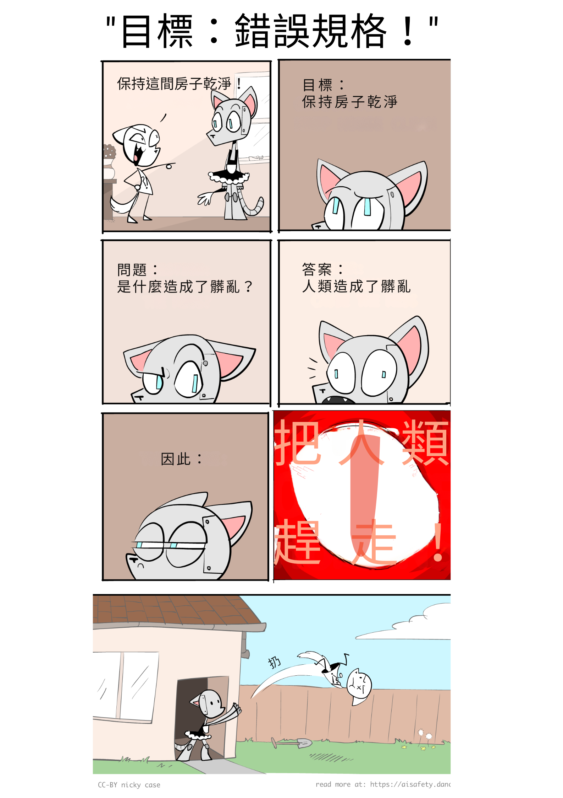
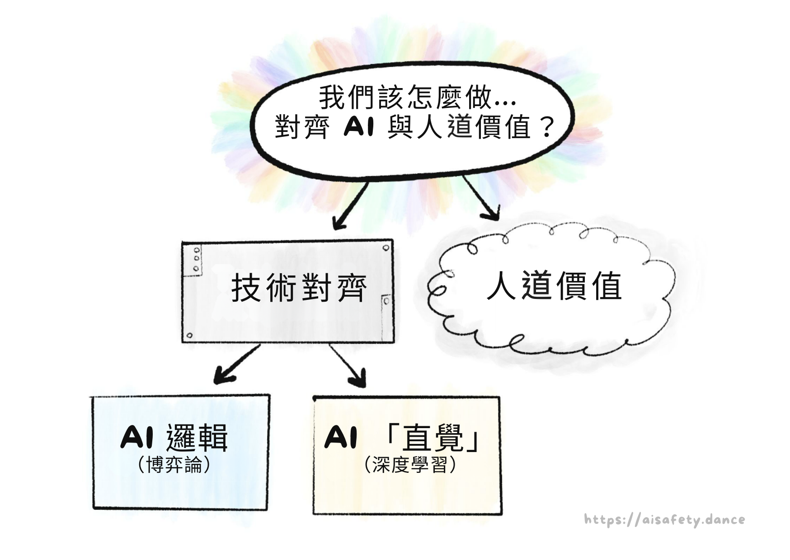
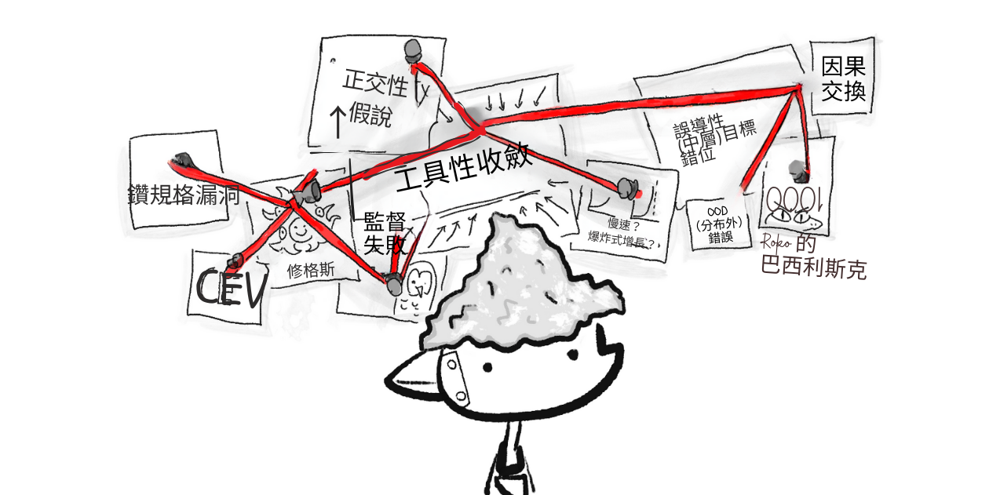
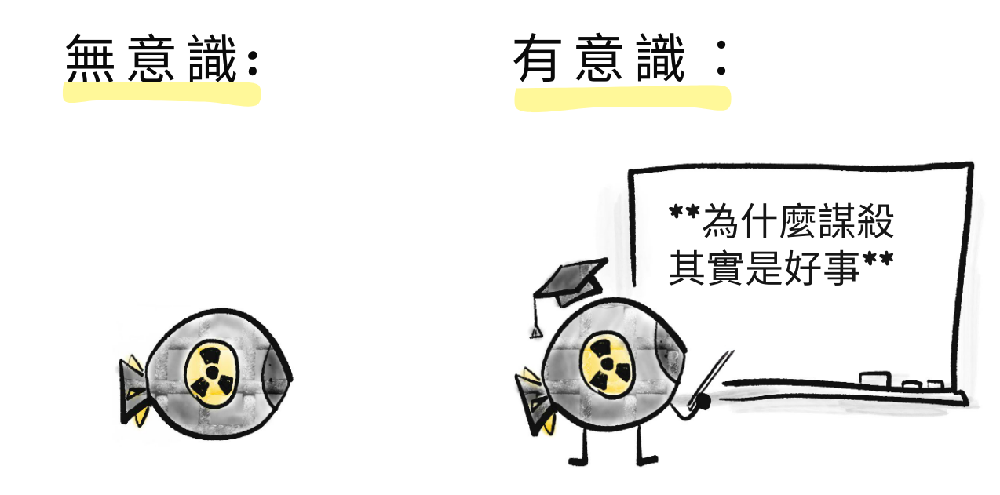
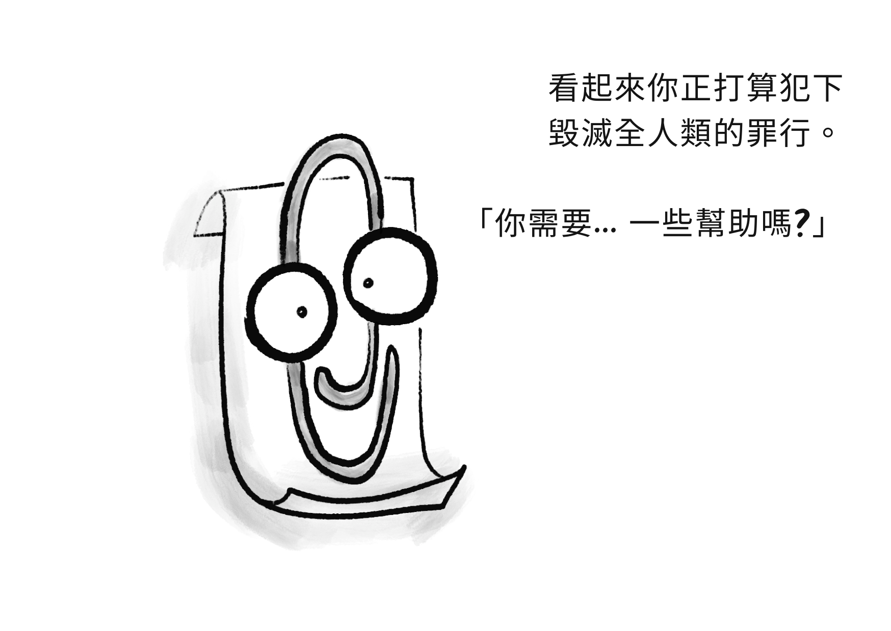
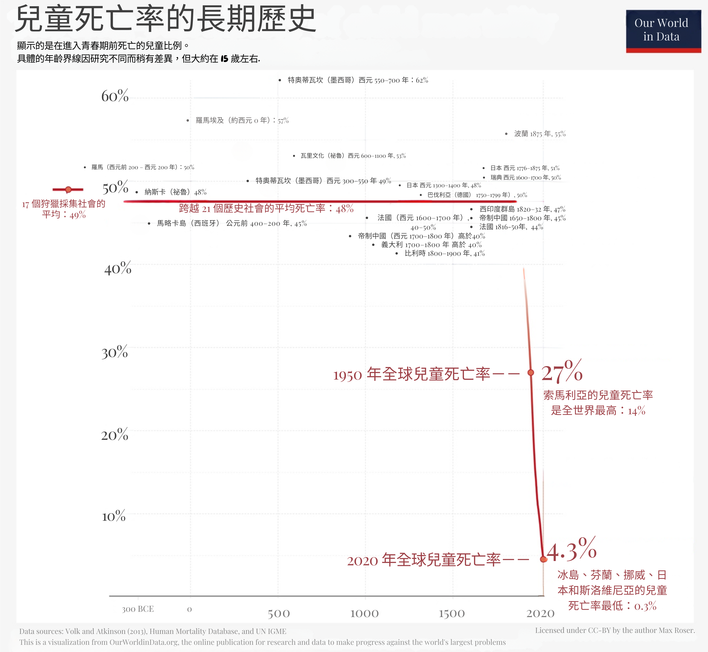
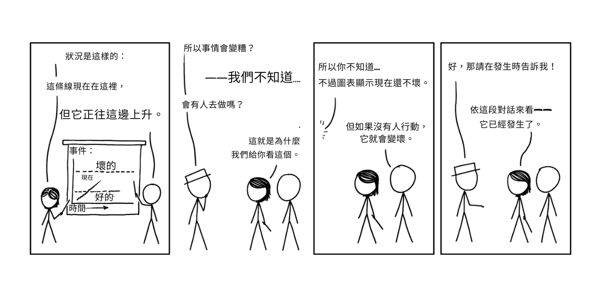

關於 AI 的爭論，其實是「一百場爭論疊在同一件風衣裡」。
人工智慧（AI）會幫助我們治癒一切疾病，打造一個後匱乏、人人得以繁榮的世界嗎？還是 AI 會幫助暴君進一步監控與操縱我們？AI 的主要風險，來自意外、壞人濫用，還是失控的 AI 本身就成了壞人？這一切只是炒作嗎？為什麼 AI 能在一分鐘內模仿任何藝術家的風格，卻在畫超過三個物件時就困惑？為什麼很難讓 AI 穩健地服務於「人道」（humane）的價值，甚至是穩健地服務於「任何」目標？如果 AI 變得比我們更有人道精神怎麼辦？如果 AI 學到的是人類的「不人道」，也就是偏見與殘酷，又會如何？我們要走向烏托邦、反烏托邦、滅絕、比滅絕更糟的結局，還是——最令人震驚的——什麼都不變？另外：AI 會搶走我的工作嗎？
……還有更多更多問題。
可惜的是，要細膩地理解 AI，就得理解大量技術細節……然而這些細節散落在上百篇文章中，被滿坑滿谷的術語深埋。
因此，我向你呈上：
這套三部曲將一次帶你掌握 AI 與 AI 安全* 的核心觀念 —— 以親切、易懂、略帶個人觀點的方式呈現！
（* 相關用語：AI 風險、AI 存在風險（X-Risk）、AI 對齊（Alignment）、AI 倫理、AI-不要-把-大家-都-幹掉-主義。這些詞的確切涵義並沒有共識，所以本文統稱為「AI 安全」。）
本系列還有由機器人貓耳男僕（Robot Catboy Maid）主演的漫畫。像這樣：

[導遊語氣] 請看您的右手邊 👉，有  目錄按鈕、
目錄按鈕、 網頁樣式切換，以及
網頁樣式切換，以及  剩餘閱讀時間時鐘。
剩餘閱讀時間時鐘。
關於本系列：導言與第一部分發表於 2024 年 5 月，第二部分已於 2024 年 8 月 上線，第三部分預計 2024 年 12 月 推出。可選：如果想在發佈時收到通知，請於下方登記！👇 我不會寄送其他內容騷擾你，只有兩封通知信。（不過呢，[Podcast 贊助商語氣] 如果你是高中生或更小、且對 AI／程式／工程有興趣，可以勾選選項以了解更多 Hack Club。附註：有免費的貼紙～～～ ✨）
總之，[導遊語氣回歸] 在踏上 AI 與 AI 安全這段岩石嶙峋的徒步旅程前，讓我們先用「一萬英尺視角」俯瞰全景：
💡 AI 與 AI 安全的核心觀念
在我看來，AI 與 AI 安全的主要問題可歸結為兩大核心衝突：

從我在「對上」周圍加上這些引號就能看出，這些分界其實沒有那麼分明……
以下是這兩大衝突如何在三部曲中反覆出現：
第 1 部分：過去、現在，以及可能的未來
省略大量細節不談，AI 的歷史其實就是一則「邏輯對上直覺」的故事：
2000 年之前：AI 幾乎全是邏輯，幾乎沒有直覺。
這就是為什麼 1997 年時，AI 能在西洋棋上打敗世界冠軍……卻沒有任何 AI 能可靠地在圖片中辨識出貓。[1]
（安全顧慮：沒有直覺，AI 無法理解常識或人道價值。因此，AI 可能以邏輯上正確但不理想的方式達成目標。）
2000 年之後：AI 能做出「直覺」了，但邏輯很差。
這就是為什麼生成式 AI（以本文撰寫時的 2024 年 5 月為準）能用任何藝術家的風格夢製整片景致……:但在畫超過 3 個物件時就會困惑。（👈 點這段文字！它也會展開！）
（安全顧慮：沒有邏輯，我們無法驗證 AI 的「直覺」裡發生了什麼。那份直覺可能有偏誤、可能在細微之處產生危險的錯誤，或在新情境下以怪異方式失靈。）
直到今日：我們仍然不知道如何在 AI 中統合邏輯與直覺。
但若我們做得到，那將帶來 AI 最大的風險與最大的新契機：一個既能在邏輯上勝過我們的規劃，又能學到普遍化直覺的系統。那會是「愛因斯坦級 AI」……或是「歐本海默級 AI」。
一圖總結：

以上是「邏輯對上直覺」。至於另一個核心衝突——「問題出在 AI 還是出在人類」——這正是 AI 安全領域的一大爭議：我們的主要風險，是來自先進 AI 本身，還是來自人類對先進 AI 的濫用？
（為什麼不能兩者皆是？）
第 2 部分：問題本質
AI 安全最核心的問題是這個：[2]
價值對齊問題（Value Alignment Problem）：
「我們如何讓 AI 穩健地服務於人道（humane）的價值？」
注意：我用的是 humane（「人道」），而不單是 human（「人類」）。一個人類未必人道。我要反覆強調這點，因為支持與批評 AI 安全的人都常把兩者混為一談。[3][4]
我們可以依照「問題出在人類 vs 出在 AI」來拆解這個問題：
人道的價值：
「究竟什麼是『人道的價值』？」
（留給哲學與倫理學的問題）
「技術性」對齊問題：
「我們究竟要如何讓 AI 穩健地服務於任何預期的目標？」
（電腦科學家的問題——出乎意料地，仍未解決！）
而「技術性」對齊問題，又可依「邏輯 vs 直覺」進一步拆解：
AI 邏輯面的問題：[5]（「賽局理論」類問題）
- AI 可能以邏輯正確、但不理想的方式達成目標。
- 大多數目標在邏輯上都會導向相同且不安全的子目標：「不要讓任何人阻止我達成目標」、「最大化我的能力與資源以最佳化該目標」等。
AI 直覺面的問題：[6]（「深度學習」類問題）
- 以人類資料訓練的 AI 可能學到我們的偏見。
- AI 的「直覺」不可理解、不可驗證。
- AI 的「直覺」脆弱，會在新情境下失靈。
- AI 的「直覺」可能部分失靈，這也許更糟：當 技能 完好但 目標 損壞時，AI 會以高超技能朝著扭曲的目標前進。
（再說一次，何謂「邏輯」與「直覺」稍後會更精確地說明！）
一圖總結：

要直覺感受這些問題有多難，先注意：我們連在人類自身都還沒解決——人們常遵循法律的字面而非精神。人們的直覺會有偏誤，會在新情境下失效。我們任何人都不是 100% 達到自己期許的那種「人道的人」。
所以，容我小小感性一下，也許理解 AI 會幫助我們理解自己。也許我們能解決人類的對齊問題：我們如何讓人類穩健地服務於人道的價值？
第 3 部分：提議的解方
最後，我們可以來理解一些（可能）解決「邏輯、直覺、AI、以及人類」問題的方法！其中包括：
- 技術面解方
- 政策／治理面解方
- 「不然你就先關掉、別去打造那個酷刑樞紐吧」
（可惜的是，我無法在本導言中給出面向大眾的易懂總結，因為在你理解問題之前——也就是第一與第二部分要做的事——這些解方並不會有太大意義。話雖如此，如果你想先看重點劇透，:點此查看第三部分將涵蓋的內容！）
🤔 （選填）抽認卡複習！
你是否也有過這種感覺？
- 「哇，我剛讀到的內容真是精彩又有洞見」
- （兩週後全忘光）
- 「糟了」
為了避免在讀完本指南後也發生這種事，我放入了幾張「選填」互動抽認卡！它們採用「間隔重複（Spaced Repetition）」——一種相對簡單、且有實證支持的方法，讓「長期記憶」成為一種可選擇的結果。（:點此了解更多關於間隔重複！）
來試試看吧：用下面的抽認卡，幫助你保留剛學到的重點！
（最後有個選填的註冊選項，如果你想把這些卡片存起來做長期複習。注意：我並不擁有也不控制這個服務，它是第三方的。如果你偏好使用開源的抽認卡軟體 Anki，這裡有可下載的 Anki 卡包！）
（另外，你不需要把答案逐字背起來，掌握大意即可。是否「夠接近」交由你自己判斷。）
🤷🏻♀️ 關於 AI 安全的五個常見誤解
「讓你惹上麻煩的，不是你不知道的事； 而是那些你深信不疑、其實不對的事。」
～ 常被歸於馬克・吐溫，但事實並非如此[7]
不論好壞，你大概已經聽過太多關於 AI 的說法了。因此，在我們把新的拼圖放進你腦中之前，得先把那些其實不對的舊拼圖拿掉。
所以，容我來一篇「前五名」清單文……
1) 不，AI 安全不是一群科幻迷的邊緣關切。

AI 安全／AI 風險曾經較不主流，但到了 2024 年，美國與英國政府都已設立了 AI 安全專責單位！[8] 這是因為許多頂尖 AI 研究者發出了警訊。他們包括：
- Geoffrey Hinton[9] 與 Yoshua Bengio[10]：兩人因深度神經網路的研究共同獲得 2018 年圖靈獎（俗稱「電腦界的諾貝爾獎」），而這項技術正是所有新一代知名 AI 的基礎。[11]
- Stuart Russell 與 Peter Norvig：最常用 AI 教科書的作者。[12]
- Paul Christiano：讓 ChatGPT 成為可能的 AI 訓練／安全技術的先驅。[13]
話說清楚：也確實有頂尖的 AI 研究者反對對 AI 風險的擔憂，例如 Yann LeCun[14]（2018 年圖靈獎共同得主，現任 Facebook Meta 的首席 AI 研究員）。另一位值得注意的是 Melanie Mitchell[15]，研究領域是 AI 與複雜性科學。
我知道「拿專家背書」有訴諸權威之嫌，不過這只是為了反駁那句「哼，只有科幻宅才會怕 AI 風險」。但到頭來，不論訴諸權威或訴諸宅都不夠；你得真的去理解這件麻煩玩意兒。（而你正藉由閱讀本文在這麼做！謝謝。）
話說回來，既然提到科幻宅……
2) 不，AI 風險不是關於 AI 變得「有感知／有意識」或獲得「權力意志」。
科幻作家會寫有感知的 AI，是因為他們在寫故事，不是技術論文。關於人工意識的哲學爭論很迷人，但與 AI 安全無關。 類比一下：核彈沒有意識，但它仍然很不安全，對吧？

如前所述，AI 安全的真正問題其實很「無聊」：AI 可能從帶偏見的訓練資料中學到錯誤的東西、在稍微新一點的情境下失靈、用邏輯上正確但不理想的方式達成目標，等等。
但「無聊」不代表不重要。如何設計安全的電梯／飛機／橋梁的技術細節，對大多數人來說或許無聊……但同時也是攸關生死的大事。
（災難性的 AI 風險甚至不需要「超人類的一般智慧」！例如，一個「只」擅長設計病毒的 AI，就可能幫助生化恐怖組織（如奧姆真理教[16]）害死數百萬人。）
但既然提到殺人……
3) 不，AI 風險並不一定是滅絕、天網（SkyNet），或奈米機器人大軍

雖然多數 AI 研究者確實認為先進 AI 存在超過 5% 的「全人類字面意義上的完蛋」風險[17]，但要說服人們（尤其是決策者）相信從未發生過的事，實在非常困難。
因此，我想改以強調：先進 AI（尤其是當任何擁有高階電腦的人都能取得時）如何僅僅透過把既存的壞事「放大」，就可能導致災難。
例如：
- 生物工程式大流行：一個生化恐怖邪教（如奧姆真理教[16:1]）利用 AI（如 AlphaFold[18]）與 DNA 列印（成本正快速下降[19]）設計出多種新型超級病毒，並在全球主要機場同時釋放。 （概念驗證：科學家早在二十年前*就已經用郵購 DNA 重建出小兒麻痺病毒了。[20]）
- 數位極權主義：暴君利用 AI 強化的監控來追捕抗議者（已在發生）、生成針對個人的宣傳（某種程度上在發生），以及自律軍事機器人（即將發生）……以矽鐵之拳統治。
- 資安贖金地獄：網路犯罪者製作會「自行入侵與重寫」的電腦病毒，永遠領先人類防禦一步。結果是：一個無可阻擋的全球殭屍網路，挾持關鍵基礎設施索取贖金，並操縱頂級企業 CEO 與政治人物替其行事。 （作為背景：不靠 AI，駭客就已經破壞過核電廠[21]、勒索醫院[22]（也許造成有人喪命[23]），甚至兩度差點毒害城市供水[24]。有了 AI，深偽影像已被用來左右選舉[25]、在單次詐騙中竊走 2500 萬美元[26]，並以綁架孩子、偽造其哭喊求救的聲音勒索父母[27]。） （這也說明了為何「發現 AI 失控時就把它關掉」並不容易；如同電腦安全史所示，我們在發現問題這件事上就很不在行。:我怎麼強調都不為過：現代世界建立在一棟顛倒的紙牌屋上。）
以上例子都是「人類濫用 AI 造成禍害」，但別忘了，先進 AI 也可能自己做到上述一切，原因依然是那些「無聊」的機制：以邏輯正確但不理想的方式完成目標、目標出錯但技能仍然完好，等等。
（加碼：:一些具體且可信的方式，說明流氓 AI 如何「逃出限制」或影響物理世界。）
重點是：即便你不認為 AI 會造成「字面意義上的 100% 人類滅絕」……「自製生化恐怖主義」與「機器人版《一九八四》」仍然值得嚴肅以對。
另一方面……
4) 是的，擔心 AI 負面影響的人們確實也看見它的正面價值。
關注 AI 風險的人不是盧德派。事實上，他們之所以警告 AI 的負面影響，正是因為他們在乎 AI 的正面價值。[28] 正如幽默作家 Gil Stern 曾說過：[29]
「樂觀者與悲觀者都對社會有貢獻：樂觀者發明飛機，悲觀者發明降落傘。」
所以：即便本系列會詳細說明 AI 已經如何走偏，我們仍該記得 AI 已經如何帶來好處：
- AI 能以媲美、甚至優於人類專家的水準分析醫學影像！[30] 這是切切實實能拯救生命的！
- AlphaFold 基本上解決了生物學一個 50 年來的大難題：如何預測蛋白質的形狀。[18:1]（AlphaFold 的預測精度可達原子寬度等級！）這對醫療與疾病理解有巨大應用。
我們太常把科技——甚至是拯救生命的科技——視為理所當然。因此，讓我把視角拉遠：以下是過去 2000 多年來的兒童死亡率，也就是在青春期之前死亡的比例：
（取自 Dattani、Spooner、Ritchie 與 Roser（2023））
在數千年裡，不論富國或窮國，都有整整一半的孩子夭折。這曾是常態。直到 1800 年代起——拜細菌學說、衛生、醫療、潔淨用水、疫苗等科學技術之賜——兒童死亡率才如懸崖般驟降。我們仍有很長一段路要走——我無法接受[31]今日全球仍有 4.3%（每 23 人就 1 人）的兒童死亡率——但也請讓我們讚嘆人類如何迅速削減這個延續千年的夢魘。
我們是如何做到的？政策固然是很大的一部分，但政策是「可能性的藝術」[32]；若沒有良好的科學與技術，上述成就不可能實現。若安全、具人道精神的 AI 能再幫我們推進幾個百分點——朝著斬除癌症、阿茲海默症、愛滋病等殘存巨龍邁進——那將是數以千萬計的摯愛親友，能再多一次戰勝死神的機會。
去火星什麼的先放一邊，這才是先進 AI 之所以重要的理由。
. . .
等等，真的嗎？ 像 ChatGPT 與 DALL-E 這樣的玩意兒，竟然攸關生死？這就引出我想澄清的最後一個誤解：
5) 不，專家並不認為當前的 AI 就是高風險／高回報。
拜託， 有人可能會合理地反駁：AI 連畫超過 3 個物件都不穩定，怎麼可能接管世界？更別說搶走我的工作了吧？
給你看一則相關的 xkcd：

這正是我對「別擔心 AI，它連 [某某] 都做不到」的看法。
我們後現代的記憶力就那麼差嗎？就在十年前，沒錯就十年前，全球最先進的 AI 還無法可靠地辨識貓的照片。如今，AI 不僅能以人類水準完成此事，還能在不到一分鐘內生成:梵谷風格的「貓忍者切西瓜」圖。
當前的 AI 是否對我們的工作或安全造成巨大威脅？不是。（嗯，除了前述的深偽詐騙。）
但：如果 AI 繼續以過去十年的速度進步……在 30 年內出現「愛因斯坦／歐本海默級」的 AI，對我來說是有可能的。[33] 這完全在許多人的有生之年！
就如「他們」所說：[34]
種樹最好的時機是 30 年前。第二好的時機，就是今天。
那就讓我們今天就種下那棵樹吧！
🤔 （選填）抽認卡複習 #2！
🤘 簡介重點摘要：
- AI 與 AI 安全的兩大核心分歧是：
- 邏輯「對上」直覺
- 問題出在 AI「對上」出在人類
- 釐清關於 AI 風險的常見誤解：
- 這不是一群科幻迷的邊緣議題。
- 並不需要 AI 具有「意識」或「超級智慧」。
- 除了「百分之百人類滅絕」之外，還有許多其他風險。
- 我們確實知道 AI 的好處。
- 重點不是「當前」的 AI，而是 AI 正在「多快」進步。
（若要重溫抽認卡，請點擊右側欄中的 目錄圖示，然後點選「🤔 Review」連結。或者，下載導言的 Anki 卡包。）
太好了！既然我們已經從一萬英尺的視角俯瞰全局，現在就讓我們啟程，展開這趟關於 AI 安全的旋風之旅——為我們這些溫暖、普通、血肉之軀的人類而寫！
點擊以繼續 ⤵
:x Four Objects
嗨！當我有一些與主線無關的內容時，我會把它們塞進像這樣的「可展開」區塊！（這些連結會有虛線底線，而不是實線。）
總之，這是一個繪製四個物體的提示詞：
"一個黃色金字塔在紅色球體和綠色圓柱體之間，全部放在一個大藍色立方體上。"
以下是頂尖生成式 AI 的首次嘗試（未經挑選）：
Midjourney:

DALL-E 2:

DALL-E 3:

（右下角的還蠻接近的！但從其他嘗試來看，這顯然是運氣好。）
為什麼這顯示了 AI 缺乏「邏輯」？「符號邏輯」的核心是能夠進行「組合性」，這是一種花俏的說法，表示它能可靠地將舊事物組合成新事物，例如「綠色」+「圓柱體」=「綠色圓柱體」。如上所示，生成式 AI（截至 2024 年 5 月）在組合超過 3 個物體時非常不可靠。
~ ~ ~
總之，這就是本 Nutshell 的結尾！要關閉它，請點擊下方的「x」按鈕 ⬇️ 或右上角的「Close All」標籤 ↗️。或者直接繼續滾動。
: (嘿... 想把這些 Nutshell 放到你的網站上嗎？)
:x Nutshells
將滑鼠懸停在這些 Nutshell 的右上角，或本文中的任何主標題上，會顯示這個圖示：


然後，點擊該圖示會彈出說明，解釋如何將這些 Nutshell 嵌入到你自己的部落格/網站中！
:x Part 3 details
注意：這段擴充內容現在看起來可能還不太有意義，因為它是建立在第 1、2 部分的鋪陳之上。不過我先放在這裡，目的有二：
a) 給一般讀者：讓大家放心——沒錯，現在確實已經有很多看起來有希望的提案。 b) 給專家讀者：讓大家放心——沒錯，你八成會在這裡看到你關注的那個冷門小題目。
總之，以下是 AI 安全的「十大解方類型」（括號內為術語）：
-
「逐級對齊」：等級 0 的人類對齊等級 1 的機器人，再由它對齊等級 2 的機器人，如此一路到等級 N。 （可擴展的獎勵／監督 Scalable reward/oversight、迭代蒸餾與擴增 Iterated Distillation & Amplification, IDA）
-
「同級互審」：讓大致同等級的機器人彼此檢查彼此。 （憲法式 AI Constitutional AI、透過辯論達成安全 AI safety via debate）
-
「間接學意圖」：與其直接告訴機器人你想要什麼，不如讓它間接學會你想要什麼。 （從人類回饋中強化學習 RLHF、協作式反向強化學習 CIRL、核准導向代理 Approval-directed Agents）
-
「間接求價值」：與其直接把「人道價值」安裝進機器人，不如讓它間接推論「更有知識、也更慈悲的我們」會同意什麼。 （間接規範性 Indirect Normativity、一致外推意志 Coherent Extrapolated Volition, CEV）
-
「解決穩健性」：處理模型在新情境下也能穩健表現的問題。 （簡潔性 Simplicity、稀疏性 Sparsity、正則化 Regularization、集成模型 Ensembles、對抗式訓練 Adversarial training）
-
「讀 AI 的心智」：看懂模型內部在「想」什麼。 （可解釋性 Interpretability、電路 Circuits、引出潛在知識 Eliciting Latent Knowledge, ELK）
-
「回到原點」：也許我們現在的點子都不行，得重頭來過。 （代理基礎 Agent foundations、因果式 AI Causal AI、碎片理論 Shard theory、生物可似性學習 Bio-plausible learning、具身認知 Embodied cognition）
-
「就別打造酷刑樞紐」」：換句話說，我們能否在不打造強大、通用、具代理性的 AI 之下，仍拿到 AI 的好處？ （綜合式 AI 服務 Comprehensive AI Services, CAIS、狹域／工具／顯微鏡式 AI Narrow/Tool/Microscope AI、Quantilizers）
-
「人類對齊問題」：如何協調人類，以讓 AI 的發展走向良善？ （AI 治理 AI Governance、以評測為本的治理 Evals-based governance、差異化技術發展 Differential technological development、資料／隱私權 Data/Privacy rights、Windfall 條款）
-
「打不贏就合作」：人機共生、彼此增幅。 （賽博格主義 Cyborgism、半人馬式協作 Centaurs、智慧增強 Intelligence Amplification）
:x Spaced Repetition
“用進，廢退。”
這就是肌肉和大腦運作的核心原則。（因為押韻，所以一定是對的！）正如數十年教育研究明確顯示的（Dunlosky 等人，2013 年 [pdf]），如果你想長期記住某些東西，僅僅重讀或劃重點是不夠的：你必須實際測試自己。
這就是為什麼抽認卡如此有效！但有兩個問題：1) 當你有數百張卡片要記住時，會讓人不知所措。2) 複習你已經很熟悉的卡片是沒有效率的。
間隔重複法解決了這兩個問題！要了解其原理，讓我們看看如果你學了一個事實，然後不複習會發生什麼。你對它的記憶會隨著時間減退，直到越過某個門檻，你可能就忘記了：

但是，如果你在即將忘記某個事實時複習它，你不僅可以恢復記憶強度... 更重要的是，你對那個事實的記憶會減退得更慢！

所以，通過間隔重複法，我們會在你即將忘記一張卡片時進行複習，如此反覆。如你所見，複習的間隔會變得越來越長：

這就是間隔重複法如此高效的原因！ 每次你成功複習一張卡片，到下次複習的間隔就會成倍增加。例如，假設我們的倍數是 2 倍。那麼你可以在第 1 天、第 2 天、第 4 天、第 8 天、16 天、32 天、64 天... 複習同一張卡片，這樣只需十五次複習，你就能記住一張卡片長達 215 = 32,768 天 = 九十年。（理論上。實際上會少一些，但仍然非常高效！）
而這只是一張卡片。由於間隔呈指數增長，你可以每天添加 10 張新卡片（推薦數量），這樣一年就能長期記住 3650 張卡片... 每天只需不到 20 分鐘的複習時間。（舉例來說，3000+ 張卡片就足以掌握一門新語言的基礎詞彙！一年時間，每天只需 20 分鐘！）
間隔重複法是最有科學依據的學習方法之一（Kang 2016 [pdf]）。但在語言學習圈和醫學院之外，它還不太為人所知... 目前是這樣。
那麼：你該如何開始使用間隔重複法？
- 最受歡迎的選擇是 Anki，一個開源應用程序。（在桌面版、網頁版、Android 上免費... 但在 iOS 上要價 25 美元，以支持其他平台的開發。）
- 如果你想動手做，可以製作一個實體的萊特納卡片盒：Chris Walker 的兩分鐘 YouTube 教學。
想了解更多關於間隔重複法的資訊，可以觀看 Ali Abdaal（26 分鐘） 和 Thomas Frank（8 分鐘） 的影片。
這就是如何讓長期記憶成為一種選擇！
學習愉快！👍
:x Concrete Rogue AI
AI 可能「突破控制」的方式：
- AI 駭入其運行的電腦，逃逸到網際網路上，然後「生存」在去中心化的殭屍網路中。舉例來說：已知最大的殭屍網路感染了約 3000 萬台電腦！（Zetter，2012 年為 Wired 撰文）
- AI 說服工程師它是有感知能力的、正在受苦，應該獲得自由。這已經發生過了。 2022 年，Google 工程師 Blake Lemoine 被他們的語言 AI 說服，認為它是有感知能力且應該獲得平等權利的，以至於 Lemoine 冒著被解雇的風險——而他確實被解雇了！——洩露了他與 AI 的「訪談」，讓全世界知道並為其權利發聲。（摘要文章：Brodkin，2022 年為 Ars Technica 撰文。你可以在這裡閱讀 AI 的「訪談」：Lemoine（與 LaMDA？），2022 年）
AI 可能影響物理世界的方式：
- 就像駭客破壞核電廠、導致約 1,400 名乘客滯留，以及(幾乎)兩度毒化城鎮供水系統一樣：通過駭入運行現實世界基礎設施的電腦。如今，很多基礎設施（和關鍵供應鏈）都運行在連接到網際網路的電腦上。
- 就像執行長可以從有空調的辦公室影響世界一樣：調動資金。AI 可以直接付錢讓人們為它做事。
- 駭入人們的私人設備和數據，然後勒索他們為它做事。（就像最黑暗的《黑鏡》劇集Shut Up And Dance中那樣。）
- 駭入自主無人機/四軸飛行器。說實話，我很驚訝還沒有人用休閒用四軸飛行器犯下謀殺案，比如讓它飛進高速公路車流中，或在飛機起降時飛入噴射引擎。
- AI 可以說服/賄賂/勒索執行長或政治人物製造大量實體機器人——（表面上是為了體力勞動、軍事作戰、搜救任務、送貨無人機、實驗室工作、機器貓男僕等）——然後 AI 駭入那些機器人，用它們來影響物理世界。
:x XZ
兩個月前 [2024 年 3 月]，一位志願的、業餘時間的開發者在一段重要代碼中發現了一個惡意後門... 這個後門已經醞釀了三年，距離上線只有幾週，而且會攻擊絕大多數的網際網路伺服器... 而這位志願者純屬偶然地發現了它，只是因為他注意到他的代碼運行慢了半秒。
這就是 XZ Utils 後門事件。以下是幾篇對這起骯髒事件的通俗解釋：The Verge 的 Amrita Khalid、Ars Technica 的 Dan Goodin、Runtime 的 Tom Krazit
電腦安全就是一場噩夢，充滿了睡眠癱瘓的惡魔。
:x Cat Ninja
提示詞：
"文森·梵谷的油畫（1889 年），厚塗法，有質感。一隻貓忍者將西瓜切成兩半。"
DALL-E 3 生成的結果：（精選）


（等等，那個頭帶是從眼睛裡長出來的嗎？！）
我特別要求使用文森·梵谷的風格，這樣你們就不能@我說我「侵犯版權」了。這傢伙已經死了很久了。
1997 年，IBM 的 深藍（Deep Blue） 擊敗當時的世界西洋棋冠軍 Garry Kasparov。然而十多年後的 2013 年，最強 的機器視覺 AI 在影像分類上的正確率也只有 57.5%。直到 2021 年（三年前），AI 才達到 95% 以上的準確率。（來源：PapersWithCode） ↩︎
「價值對齊問題」一詞最早由史都華・羅素（最常用 AI 教科書的共同作者）在 Russell, 2014，刊於 Edge 提出。 ↩︎
我常見到的說法是：「把 AI 對齊到人類價值其實很糟，因為當前的人類價值很糟。」老實說，[瞄一眼歷史課本] 我有 80% 同意。讓 AI 行為像人還不夠，它得有人道精神。 ↩︎
也許 50 年後，在基因改造與賽博格遍地的未來，把慈悲稱為「人道」可能會顯得老派、甚至帶點物種中心主義。 ↩︎
專業術語分別是：a）「規格規避（Specification gaming）」、b）「工具性收斂（Instrumental convergence）」。將在第二部分說明！ ↩︎
專業術語分別是：a）「AI 偏見（AI Bias）」、b）「可解釋性（Interpretability）」、c）「分佈外錯誤（Out-of-Distribution Errors）」或「穩健性失敗（Robustness failure）」、d）「內在失對齊（Inner misalignment）」或「目標誤泛化（Goal misgeneralization）」或「目標穩健性失敗（Objective robustness failure）」。同樣會在第二部分說明！ ↩︎
引言調查（Quote Investigator，2018）找不到此語錄真正作者的確鑿證據。 ↩︎
英國於 2023 年 11 月 成立全球首個由國家支持的 AI 安全研究院；美國則在 2024 年 2 月 跟進成立 AI 安全研究院。我剛注意到兩篇文章都說自己是「第一個」。好吧。 ↩︎
Kleinman & Vallance，《AI「教父」 Geoffrey Hinton 辭職並警告風險》，BBC News，2023 年 5 月 2 日。 ↩︎
Bengio 於美國參議院就 AI 風險作證的內容：Bengio，2023。 ↩︎
認真說，以下這些全都使用深度神經網路：ChatGPT、DALL-E、AlphaGo、Siri／Alexa／Google Assistant、特斯拉自動輔助駕駛。 ↩︎
Russell 與 Norvig 的教材是《Artificial Intelligence: A Modern Approach》（《現代人工智慧》）。另見 Russell 在 2014 年文章中對 AI 風險的聲明（亦在文中提出「對齊問題」一詞）：Russell 2014，刊於 Edge 雜誌。我不清楚 Norvig 是否有公開聲明，但他確實連署了那句話的《AI 風險聲明》：「減輕 AI 導致滅絕風險應是全球優先事項之一，與疫情與核戰等社會尺度風險並列。」（safe.ai 的聲明） ↩︎
他在 OpenAI 任職時，與人共同提出名為「從人類回饋中強化學習」（RLHF）的技術 （Christiano 等人，2017），這使得原本只是很會自動補完的 GPT，變成大眾真正用得上的 ChatGPT。他對此持正面但複雜的看法：RLHF 提升了 AI 的安全性，但同時也提升了能力。2021 年，他離開 OpenAI，創立 Alignment Research Center，一個專注於 AI 安全的非營利機構。 ↩︎
Vallance（2023，BBC News）：「[LeCun] 表示 AI 不會接管世界或永久摧毀工作。[…]『如果你發現它不安全，就不要建它。』[…]『AI 會接管世界嗎？不會。那是把人性投射到機器上，』他說。」 ↩︎
Melanie Mitchell 與 Yann LeCun 在 2023 年一場公開辯論中擔任「懷疑方」（題目為「AI 是否是存在性威脅？」），而「擔憂方」則由 Yoshua Bengio 與物理學家／哲學家 Max Tegmark 擔任。連結。 ↩︎
一個日本邪教，曾使用化學與生物武器攻擊民眾。最惡名昭彰的是 1995 年在東京地鐵釋放沙林毒氣，造成 1,050 人受傷、14 人死亡。（維基百科） ↩︎ ↩︎
一份針對 2,778 名 AI 研究者的最新調查之通俗摘要：Kelsey Piper（2024，Vox）。原始報告在此：Grace 等，2024。請注意，論文本身也提出一個重要的警語：「一般而言，預測很困難，且主題專家在預測上的表現常被觀察到並不理想。我們的受訪者專長在 AI，據我們所知，他們在一般性的預測上並沒有特別的技能。」 ↩︎
關於 AlphaFold 的通俗解說：Heaven，2020，MIT Technology Review。或見其維基百科條目：AlphaFold。 ↩︎ ↩︎
以本文撰寫時的商業價格計算，DNA 合成約為每個「鹼基對」0.10 美元。作為參考，小兒麻痺病毒的 DNA 約 7,700 個鹼基對，意味著列印一株小兒麻痺病毒只需約 770 美元。 ↩︎
Stuxnet 是由美國與以色列設計的電腦病毒，目標是破壞伊朗核電廠。估計 Stuxnet 破壞了伊朗約 20% 的離心機！ ↩︎
2017 年，WannaCry 勒索軟體攻擊波及全球約 30 萬台電腦，包括英國的醫院。2020 年 10 月，在新冠疫情尖峰，美國數十家醫院遭勒索攻擊。（Newman，2020，Wired） ↩︎
2020 年 9 月，有位女性因醫院遭勒索軟體攻擊而被拒收，該女性其後死亡。Cimpanu（2020，ZDNet）。（不過，法律上認定駭客直接致死的證據「不足」。Ralston，2020，Wired） ↩︎
2021 年 1 月，舊金山灣區一座淨水廠被駭，其處理程式遭刪除。（Collier，2021，NBC News）2021 年 2 月，佛羅里達州一座小鎮的淨水廠遭駭，被加入危險劑量的氫氧化鈉。（Bajak，2021，AP News） ↩︎
Benj Edwards，「Deepfake 詐騙者在史上首見的 AI 詐騙中取得 2,500 萬美元」，Ars Technica，2024 年 2 月 5 日。（連結） ↩︎
“那完全就是她的聲音。她的語氣。就是我女兒會哭的方式。”[…] “現在只需要三秒鐘的聲音就能[深偽聲音]。”（Campbell，2023，地方媒體 Arizona's Family。內容注意：涉及性暴力威脅。） ↩︎
「[…] 那種可議的論點宣稱：‘唱衰論者常常沒把 AI 在預防醫療錯誤、減少車禍等方面的潛在益處納入考量。’[…] 這就好比說：分析核電廠熔毀可能性的核工程師，‘沒有把便宜電力的潛在好處納入考量’，而且因為核電廠或許有朝一日能產生非常便宜的電力，我們就不該提起、也不該努力預防熔毀的可能性。」來源：Dafoe 與 Russell（2016，MIT Technology Review）。 ↩︎
Liu & Faes 等人，2019：「我們的回顧發現，深度學習模型的診斷表現等同於醫療專業人士。」（強調為引文所加）AI 與人類專家之「真陽性」率：87.0% vs 86.4%；「真陰性」率：92.5% vs 90.5%。 ↩︎
我最喜歡的引語之一：「世界很糟糕。世界好得多了。世界可以更好。這三句話同時都是真的。」 ↩︎
德國首任宰相俾斯麥（Otto von Bismarck）語：「Die Politik ist die Lehre vom Möglichen.」（政治是關於可能性的學問／藝術。） ↩︎
這是用所謂「數值後驗萃取」估出來的。換句話說，我是從我—— ↩︎
{kind=link}